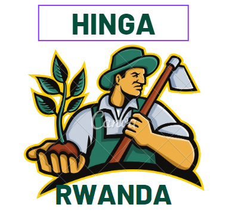
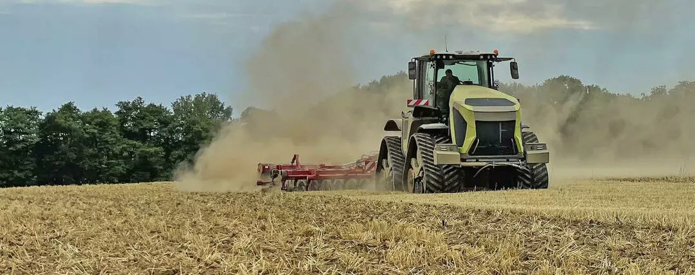

|  | Choose store | My Account | charts | ||||||
|---|---|---|---|---|---|---|---|---|---|
| HOME | ABOUT US | SERVICES | FARMER PROFILE | MARKET PRICE | TRAINING | CONTACT AND SUPPORT | PATERNERSHIP | ||
|  | |||||||||
| Animals | Bimwe mubihingwa by'Urwanda | Advertisemnts | |||||||
| crops | |
OUR MISSIONTo provide a well structure agriculture product and Better market. |
|||||||
| Meet your partern | Over view of agriculture in RwandaAgriculture is a major economic sector for the people of Rwanda, employing about 70% of the total population. The industry contributes about 31% to GDP, and it stands out as one of the most strategic sectors in Rwanda’s development. It accounts for a more significant part of the foreign exchange earnings from the exports of products, including; coffee, tea, hides and skins, pyrethrum, and horticulture. 75% of Rwanda’s agricultural production comes from smallholder farmers. Rwanda’s principal crops include coffee, pyrethrum, tea, flowers, beans, cassava banana, Irish potatoes, rice, wheat, sugarcane, among others. About 61% of Rwandan soil is suitable for agriculture as the soils are fertile. The Government of Rwanda is tangibly committed to boosting the development of the country’s agri-sector. It has invested considerably in infrastructure, responsive institutions, inclusive markets, and innovation &extension while creating an enabling environment for private sector investment. Meanwhile, investment opportunities exist in the following: Dairy, Poultry, Meat processing, Horticulture, Aquaculture, Mechanization, crop sourcing, blockchain, Agro-tourism, manufacturing of irrigation equipment, and cold chain logistics. |
||||||||
| get be traiined | |||||||||
| Ask for advices. | |||||||||